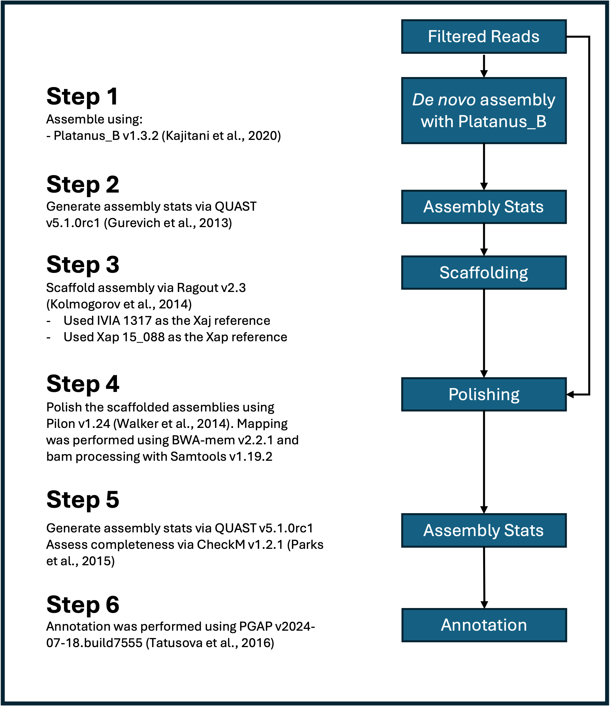
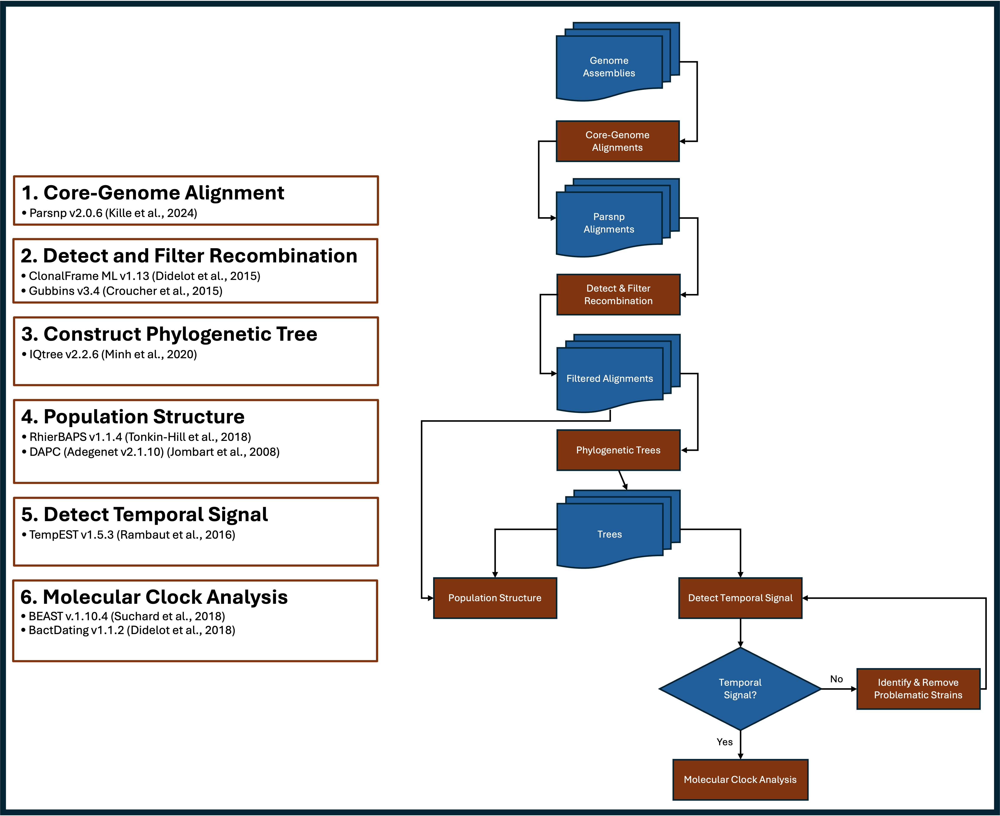

3 Methods
3.1 Read Processing
Whole-genome sequencing from Novogene generated high-quality reads (Table 4.1). Novogene provides reads that have been filtered based on the following criteria:
Remove reads containing adapters.
Remove reads containing N > 10% (N represents the base cannot be determined).
Remove reads containing low quality (Qscore<= 5) base which is over 50% of the total base.
However, I performed an additional filtering step using FastP v0.23.4 (Chen et al. (2018)). The filters I’m applying are as follows:
-q 30 (the quality value that a base is qualified)
--detect_adapter_for_pe (automatically detect adapter sequence based on paired end reads, and remove them)Since we received ~2x the amount of sequencing data than we were quoted for, I chose to filter the data for the highest quality reads (q \(\geq 30\)). I also opted to enable the auto-detection for adapter removal. Novogene removes most adapter sequences but < 1% of the read sets contain adapter sequences so FastP should detect and remove the remainders. Please refer to FastP.sh (5.1.1) for the script.
3.2 Genome Assembly and Annotation
Prior to settling on the pipeline detailed below, I tested several other pipelines that are detailed in XAJ_XAP_Project.v1.md, AS_Progress_Report_090924.v3.pptx, and Assembly_Pipeline_102424.pptx. Based on the findings from the pipeline tests, we settled on the following steps for de novo genome assembly and annotation (3.1):
- De novo assembly using Platanus_B v1.3.2 (Kajitani et al. (2020)).
- Generate assembly stats via QUAST v5.1.0rc1 (Gurevich et al. (2013)).
- Scaffold contigs using Ragout v2.3 (Kolmogorov et al. (2014)).
- Xaj isolate IVIA 1317 (NCBI Accession: GCF_023375035.1) (Cuesta-Morrondo et al. (2022)) was used as the reference for the Xaj population.
- Xap isolate 15-088 (NCBI Accession: GCF_008761555.1) was used as the reference for the Xap population.
- Polish scaffolds with Pilon (Walker et al. (2014)).
- Assess completeness and contamination with CheckM (Parks et al. (2015)).
- Annotate with NCBI PGAP (Tatusova et al. (2016)).
- Since I already generated the Bioproject and Biosamples I was able to generate NCBI-submission ready annotations.
- These are currently being processed by NCBI. Two samples had an error and I’m in communication with NCBI on how to resolve these errors.

Figure 3.1: Xaj and Xap assembly pipeline
3.2.1 Steps 1-2. Platanus_B & QUAST
I generated Assembly_Workflow_Platanus_B.csv and used it as my $SAMPFILE variable for running Platanus_B with the Step1.Assemble.sh (5.2.1) script. It contains 5 columns that detail the sample ID, Strain, filtered Read1, filtered Read2, and organism. The Assembly_Workflow_Platanus_B.csv file was converted to unix format using the dos2unix Assembly_Workflow_Platanus_B.csv command on the cluster and afterwards the nano Assembly_Workflow_Platanus_B.csv command was used to add one blank line at the end. Step1.Assemble.sh (5.2.1) generated the de novo assemblies (contigs) and QUAST was used to generate assembly statistics.
I wrote a series of scripts to summarize the annotation and assembly results. These scripts are:
Summarize_ANI.sh (5.2.2), Summarize_CheckM.sh (5.2.3), and Summarize_Genbank.py (5.2.4)
3.2.2 Step 3. Scaffolding
Ragout v2.3 was used to scaffold the assemblies using Step2.Scaffold.sh (5.2.6) . I used Xaj 417 and IVIA 1317 as reference strains for Xaj and 15-088 as the reference strain for Xap. As mentioned previously, we opted to proceed with the Ragout scaffolds using the IVIA 1317 reference since it gave better results (see Assembly_Pipeline_102424.pptx). QUAST was also used to generate statistics for comparisons.
Ragout uses .rcp files as inputs to set specific variables. I generated two template .rcp files for Xaj (XAJ_Template.rcp) and Xap (XAP_Template.rcp), respectively. These template files served as an input for .rcp file generation for each strain. XAJ_Strains.RCP.csv and XAP_Strains.RCP.csv served as input files for generating the .rcp files using Generate_RCP.sh (5.2.5).
3.2.3 Step 4. Polishing with Pilon
Based on the the previous findings (see Assembly_Pipeline_102424.pptx), Pilon increased assembly quality. Pilon v1.24 using default settings were applied to the Ragout assemblies using Step3.Polish.sh (5.2.7). I used BWA-mem2 v2.2.1 (Vasimuddin et al. (2019)), and samtools v1.19.2 (Li et al. (2009)) prior to Pilon. These Pilon polished assemblies were used for the PGAP annotations. The Pilon-polished assemblies were then subjected to CheckM (Parks et al. (2015)) using the taxonomy option with Xanthomonas as the reference genus to assess completeness and contamination (see Step3.CheckM.sh (5.2.8)).
3.2.4 Step 5. Annotation
I downloaded PGAP v2024-07-18.build7555 on my local computer because I was running into issues trying to install it on the cluster. Since these assemblies and annotations will be submitted to NCBI, I needed to generate $STRAIN.generic.yaml and $STRAIN.submol.yaml as inputs for PGAP to ensure that all metadata is correctly assigned. I wrote Generate_Generic_YAML.sh (5.2.9) and Generate_Submol_YAML.sh (5.2.10) to efficiently generate the .yaml files. The metadata was stored in Reference_Data_For_YAML.txt and each of the .yaml scripts used that file to generate the respective .yaml files. Next I wrote PGAP.sh (5.2.11), the core PGAP command, to generate the annotations and I called that script using Step4.Annotate.sh (5.2.12) because I was running this locally.
3.2.5 NCBI Submission
Before we publish the manuscript we must submit our data (raw Illumina reads & annotated assemblies) to NCBI. I submitted all the raw reads from Novogene to the SRA under the BioProject PRJNA1151720 (3.1). The SRA submission has already been processed and will be released upon publication. The genomes are currently being processed as of January 17,2025.
Unfortunately, XAJ2128 and XAJ934 had one error each that I must address before submission. The error is the same for both: [SEQ_FEAT.FeatureBeginsOrEndsInGap] Feature begins or ends in gap and only occurs for one gene (transposase) in each strain, respectively. Specifically, the beginning of the genes start with an ‘N’, but the respective protein started with an ‘M’. According to NCBI, the fix is to either remove the gene entirely or label the gene as ‘partial’. Since I’ve already performed genomic analyses (phylogeny, pangenome, etc.) I do not want to remove the gene. I emailed NCBI on January 21, 2025 to ask for assistance to make these changes to indicate that the transposase is indicated as ‘partial’. I’m confident that they will be able to help me make these changes. This is likely due to me using the --ignore-all-errors argument in PGAP.sh (5.2.11). I had to use that argument in order to make the program run.. otherwise the annotations would fail. It’s fine as the other annotations are processing just fine.
Here are the BioProject details (please note that this information can be modified if needed, as I wrote these as placeholders):
BioProject Accession:
- PRJNA1151720
Title:
- Population genomics of Xanthomonas arboricola pv. juglandis and X. arboricola pv. pruni from California
Description:
- Xanthomonas arboricola pv. juglandis ( Xaj ) and X. arboricola pv. pruni ( Xap ) are the causal agents of walnut blight and bacterial spot of almond, respectively. California is the global leader in almond production and the top producer of walnuts in the United States, but both crops face challenges from Xaj and Xap, respectively. Moreover, the persistent use of copper-based bactericides has led to copper-resistant strains of Xaj and Xap. In this study, we sequenced and assembled the genomes of 120 Xaj and 20 Xap strains isolated from walnut and almond in Central and Northern California, respectively, to determine their population structure, detect copper resistance within the populations, and characterize their type III secretion system effector repertoires.
| Strain | BioSample | BioProject | Study | SRA Accession |
|---|---|---|---|---|
| XAJ1028 | SAMN43323323 | PRJNA1151720 | SRP528351 | SRR30358100 |
| XAJ1046 | SAMN43323324 | PRJNA1151720 | SRP528351 | SRR30358099 |
| XAJ1048 | SAMN43323325 | PRJNA1151720 | SRP528351 | SRR30358014 |
| XAJ1049 | SAMN43323326 | PRJNA1151720 | SRP528351 | SRR30358003 |
| XAJ1054 | SAMN43323327 | PRJNA1151720 | SRP528351 | SRR30357970 |
| XAJ1082 | SAMN43323328 | PRJNA1151720 | SRP528351 | SRR30358043 |
| XAJ1086 | SAMN43323329 | PRJNA1151720 | SRP528351 | SRR30358035 |
| XAJ1148 | SAMN43323330 | PRJNA1151720 | SRP528351 | SRR30358000 |
| XAJ1149 | SAMN43323331 | PRJNA1151720 | SRP528351 | SRR30357988 |
| XAJ1197 | SAMN43323332 | PRJNA1151720 | SRP528351 | SRR30358075 |
| XAJ1213 | SAMN43323333 | PRJNA1151720 | SRP528351 | SRR30358098 |
| XAJ1239 | SAMN43323334 | PRJNA1151720 | SRP528351 | SRR30358087 |
| XAJ1246 | SAMN43323335 | PRJNA1151720 | SRP528351 | SRR30358063 |
| XAJ1250 | SAMN43323336 | PRJNA1151720 | SRP528351 | SRR30358052 |
| XAJ1395 | SAMN43323337 | PRJNA1151720 | SRP528351 | SRR30358019 |
| XAJ1399 | SAMN43323338 | PRJNA1151720 | SRP528351 | SRR30358018 |
| XAJ145 | SAMN43323339 | PRJNA1151720 | SRP528351 | SRR30358021 |
| XAJ1498 | SAMN43323340 | PRJNA1151720 | SRP528351 | SRR30358017 |
| XAJ1535 | SAMN43323341 | PRJNA1151720 | SRP528351 | SRR30358016 |
| XAJ1537 | SAMN43323342 | PRJNA1151720 | SRP528351 | SRR30358015 |
| XAJ1539 | SAMN43323343 | PRJNA1151720 | SRP528351 | SRR30358013 |
| XAJ1551 | SAMN43323344 | PRJNA1151720 | SRP528351 | SRR30358012 |
| XAJ1554 | SAMN43323345 | PRJNA1151720 | SRP528351 | SRR30358011 |
| XAJ1556 | SAMN43323346 | PRJNA1151720 | SRP528351 | SRR30358010 |
| XAJ1557 | SAMN43323347 | PRJNA1151720 | SRP528351 | SRR30358009 |
| XAJ1558 | SAMN43323348 | PRJNA1151720 | SRP528351 | SRR30358008 |
| XAJ1595 | SAMN43323349 | PRJNA1151720 | SRP528351 | SRR30358007 |
| XAJ1606 | SAMN43323350 | PRJNA1151720 | SRP528351 | SRR30358006 |
| XAJ1613 | SAMN43323351 | PRJNA1151720 | SRP528351 | SRR30358005 |
| XAJ1614 | SAMN43323352 | PRJNA1151720 | SRP528351 | SRR30358004 |
| XAJ1615 | SAMN43323353 | PRJNA1151720 | SRP528351 | SRR30357980 |
| XAJ1616 | SAMN43323354 | PRJNA1151720 | SRP528351 | SRR30357979 |
| XAJ1617 | SAMN43323355 | PRJNA1151720 | SRP528351 | SRR30357978 |
| XAJ1626 | SAMN43323356 | PRJNA1151720 | SRP528351 | SRR30357977 |
| XAJ163 | SAMN43323357 | PRJNA1151720 | SRP528351 | SRR30357976 |
| XAJ165 | SAMN43323358 | PRJNA1151720 | SRP528351 | SRR30357975 |
| XAJ169 | SAMN43323359 | PRJNA1151720 | SRP528351 | SRR30357974 |
| XAJ1710 | SAMN43323360 | PRJNA1151720 | SRP528351 | SRR30357973 |
| XAJ1711 | SAMN43323361 | PRJNA1151720 | SRP528351 | SRR30357972 |
| XAJ1808 | SAMN43323362 | PRJNA1151720 | SRP528351 | SRR30357971 |
| XAJ181 | SAMN43323363 | PRJNA1151720 | SRP528351 | SRR30357969 |
| XAJ1822 | SAMN43323364 | PRJNA1151720 | SRP528351 | SRR30357968 |
| XAJ1824 | SAMN43323365 | PRJNA1151720 | SRP528351 | SRR30357967 |
| XAJ2122 | SAMN43323366 | PRJNA1151720 | SRP528351 | SRR30357966 |
| XAJ2124 | SAMN43323367 | PRJNA1151720 | SRP528351 | SRR30357965 |
| XAJ2125 | SAMN43323368 | PRJNA1151720 | SRP528351 | SRR30357964 |
| XAJ2128 | SAMN43323369 | PRJNA1151720 | SRP528351 | SRR30357963 |
| XAJ2129 | SAMN43323370 | PRJNA1151720 | SRP528351 | SRR30357962 |
| XAJ2131 | SAMN43323371 | PRJNA1151720 | SRP528351 | SRR30357961 |
| XAJ2165 | SAMN43323372 | PRJNA1151720 | SRP528351 | SRR30358044 |
| XAJ2167 | SAMN43323373 | PRJNA1151720 | SRP528351 | SRR30358042 |
| XAJ2169 | SAMN43323374 | PRJNA1151720 | SRP528351 | SRR30358041 |
| XAJ2170 | SAMN43323375 | PRJNA1151720 | SRP528351 | SRR30358040 |
| XAJ2178 | SAMN43323376 | PRJNA1151720 | SRP528351 | SRR30358039 |
| XAJ2180 | SAMN43323377 | PRJNA1151720 | SRP528351 | SRR30358038 |
| XAJ283A | SAMN43323378 | PRJNA1151720 | SRP528351 | SRR30358037 |
| XAJ283B | SAMN43323379 | PRJNA1151720 | SRP528351 | SRR30358036 |
| XAJ30 | SAMN43323380 | PRJNA1151720 | SRP528351 | SRR30358034 |
| XAJ31 | SAMN43323381 | PRJNA1151720 | SRP528351 | SRR30358033 |
| XAJ32 | SAMN43323382 | PRJNA1151720 | SRP528351 | SRR30358032 |
| XAJ321 | SAMN43323383 | PRJNA1151720 | SRP528351 | SRR30358031 |
| XAJ322 | SAMN43323384 | PRJNA1151720 | SRP528351 | SRR30358030 |
| XAJ33 | SAMN43323385 | PRJNA1151720 | SRP528351 | SRR30358029 |
| XAJ330 | SAMN43323386 | PRJNA1151720 | SRP528351 | SRR30358028 |
| XAJ333 | SAMN43323387 | PRJNA1151720 | SRP528351 | SRR30358026 |
| XAJ338 | SAMN43323388 | PRJNA1151720 | SRP528351 | SRR30358025 |
| XAJ34 | SAMN43323389 | PRJNA1151720 | SRP528351 | SRR30358024 |
| XAJ340 | SAMN43323390 | PRJNA1151720 | SRP528351 | SRR30358027 |
| XAJ341 | SAMN43323391 | PRJNA1151720 | SRP528351 | SRR30358002 |
| XAJ344 | SAMN43323392 | PRJNA1151720 | SRP528351 | SRR30358001 |
| XAJ345 | SAMN43323393 | PRJNA1151720 | SRP528351 | SRR30357999 |
| XAJ347 | SAMN43323394 | PRJNA1151720 | SRP528351 | SRR30357997 |
| XAJ349 | SAMN43323395 | PRJNA1151720 | SRP528351 | SRR30357996 |
| XAJ35 | SAMN43323396 | PRJNA1151720 | SRP528351 | SRR30357995 |
| XAJ355 | SAMN43323397 | PRJNA1151720 | SRP528351 | SRR30357998 |
| XAJ36 | SAMN43323398 | PRJNA1151720 | SRP528351 | SRR30357994 |
| XAJ372 | SAMN43323399 | PRJNA1151720 | SRP528351 | SRR30357993 |
| XAJ38 | SAMN43323400 | PRJNA1151720 | SRP528351 | SRR30357992 |
| XAJ390 | SAMN43323401 | PRJNA1151720 | SRP528351 | SRR30357991 |
| XAJ402 | SAMN43323402 | PRJNA1151720 | SRP528351 | SRR30357989 |
| XAJ426 | SAMN43323403 | PRJNA1151720 | SRP528351 | SRR30357987 |
| XAJ427 | SAMN43323404 | PRJNA1151720 | SRP528351 | SRR30357990 |
| XAJ428 | SAMN43323405 | PRJNA1151720 | SRP528351 | SRR30357986 |
| XAJ432 | SAMN43323406 | PRJNA1151720 | SRP528351 | SRR30357985 |
| XAJ435 | SAMN43323407 | PRJNA1151720 | SRP528351 | SRR30357984 |
| XAJ438 | SAMN43323408 | PRJNA1151720 | SRP528351 | SRR30357983 |
| XAJ439 | SAMN43323409 | PRJNA1151720 | SRP528351 | SRR30357981 |
| XAJ456 | SAMN43323410 | PRJNA1151720 | SRP528351 | SRR30358077 |
| XAJ458 | SAMN43323411 | PRJNA1151720 | SRP528351 | SRR30358076 |
| XAJ462 | SAMN43323412 | PRJNA1151720 | SRP528351 | SRR30357982 |
| XAJ464 | SAMN43323413 | PRJNA1151720 | SRP528351 | SRR30358074 |
| XAJ465 | SAMN43323414 | PRJNA1151720 | SRP528351 | SRR30358073 |
| XAJ466 | SAMN43323415 | PRJNA1151720 | SRP528351 | SRR30358072 |
| XAJ467 | SAMN43323416 | PRJNA1151720 | SRP528351 | SRR30358070 |
| XAJ469 | SAMN43323417 | PRJNA1151720 | SRP528351 | SRR30358069 |
| XAJ470 | SAMN43323418 | PRJNA1151720 | SRP528351 | SRR30358068 |
| XAJ473 | SAMN43323419 | PRJNA1151720 | SRP528351 | SRR30358071 |
| XAJ476 | SAMN43323420 | PRJNA1151720 | SRP528351 | SRR30358067 |
| XAJ477 | SAMN43323421 | PRJNA1151720 | SRP528351 | SRR30358066 |
| XAJ669 | SAMN43323422 | PRJNA1151720 | SRP528351 | SRR30358064 |
| XAJ670 | SAMN43323423 | PRJNA1151720 | SRP528351 | SRR30358097 |
| XAJ671 | SAMN43323424 | PRJNA1151720 | SRP528351 | SRR30358096 |
| XAJ672 | SAMN43323425 | PRJNA1151720 | SRP528351 | SRR30358095 |
| XAJ673 | SAMN43323426 | PRJNA1151720 | SRP528351 | SRR30358094 |
| XAJ674 | SAMN43323427 | PRJNA1151720 | SRP528351 | SRR30358093 |
| XAJ675 | SAMN43323428 | PRJNA1151720 | SRP528351 | SRR30358092 |
| XAJ729 | SAMN43323429 | PRJNA1151720 | SRP528351 | SRR30358090 |
| XAJ730 | SAMN43323430 | PRJNA1151720 | SRP528351 | SRR30358089 |
| XAJ731 | SAMN43323431 | PRJNA1151720 | SRP528351 | SRR30358088 |
| XAJ929 | SAMN43323432 | PRJNA1151720 | SRP528351 | SRR30358091 |
| XAJ930 | SAMN43323433 | PRJNA1151720 | SRP528351 | SRR30358086 |
| XAJ934 | SAMN43323434 | PRJNA1151720 | SRP528351 | SRR30358085 |
| XAJ935 | SAMN43323435 | PRJNA1151720 | SRP528351 | SRR30358084 |
| XAJ936 | SAMN43323436 | PRJNA1151720 | SRP528351 | SRR30358082 |
| XAJ939 | SAMN43323437 | PRJNA1151720 | SRP528351 | SRR30358081 |
| XAJ940 | SAMN43323438 | PRJNA1151720 | SRP528351 | SRR30358080 |
| XAJ968 | SAMN43323439 | PRJNA1151720 | SRP528351 | SRR30358083 |
| XAJ969 | SAMN43323440 | PRJNA1151720 | SRP528351 | SRR30358079 |
| XAJ973 | SAMN43323441 | PRJNA1151720 | SRP528351 | SRR30358078 |
| XAJ984 | SAMN43323442 | PRJNA1151720 | SRP528351 | SRR30358065 |
| XAP1007 | SAMN43323443 | PRJNA1151720 | SRP528351 | SRR30358062 |
| XAP1010 | SAMN43323444 | PRJNA1151720 | SRP528351 | SRR30358061 |
| XAP1159 | SAMN43323445 | PRJNA1151720 | SRP528351 | SRR30358060 |
| XAP1265 | SAMN43323446 | PRJNA1151720 | SRP528351 | SRR30358059 |
| XAP1657 | SAMN43323447 | PRJNA1151720 | SRP528351 | SRR30358058 |
| XAP1741 | SAMN43323448 | PRJNA1151720 | SRP528351 | SRR30358057 |
| XAP2004 | SAMN43323449 | PRJNA1151720 | SRP528351 | SRR30358056 |
| XAP2016 | SAMN43323450 | PRJNA1151720 | SRP528351 | SRR30358055 |
| XAP2023 | SAMN43323451 | PRJNA1151720 | SRP528351 | SRR30358054 |
| XAP2029 | SAMN43323452 | PRJNA1151720 | SRP528351 | SRR30358053 |
| XAP2036 | SAMN43323453 | PRJNA1151720 | SRP528351 | SRR30358051 |
| XAP2039 | SAMN43323454 | PRJNA1151720 | SRP528351 | SRR30358050 |
| XAP2106 | SAMN43323455 | PRJNA1151720 | SRP528351 | SRR30358049 |
| XAP2113 | SAMN43323456 | PRJNA1151720 | SRP528351 | SRR30358048 |
| XAP2150 | SAMN43323457 | PRJNA1151720 | SRP528351 | SRR30358047 |
| XAP664 | SAMN43323458 | PRJNA1151720 | SRP528351 | SRR30358046 |
| XAP667 | SAMN43323459 | PRJNA1151720 | SRP528351 | SRR30358045 |
| XAP880 | SAMN43323460 | PRJNA1151720 | SRP528351 | SRR30358023 |
| XAP883 | SAMN43323461 | PRJNA1151720 | SRP528351 | SRR30358022 |
| XAP948 | SAMN43323462 | PRJNA1151720 | SRP528351 | SRR30358020 |
3.2.6 Xaj, Xap, and Xhg RefSeq Genomic Resources
I downloaded several RefSeq accessions for various Xaj, Xap and X. hortorum pv. gardneri ( Xhg ) for my phylogenetic analyses (3.2).
| Accession | BioProject Accession | Protein Coding Genes | Gene count total | Assembly level | Organism | Number of Component Sequences | Strain | Collection Date | Host | Location |
|---|---|---|---|---|---|---|---|---|---|---|
| GCF_000306055.1 | PRJNA84273 | 4155 | 4517 | Contig | Xaj | 371 | NCPPB 1447 | 1963 | Juglans | Romnia |
| GCF_001013475.1 | PRJNA275685 | 4165 | 4387 | Scaffold | Xaj | 8 | CFBP 2528 | 1956 | Juglans regia | New Zealand |
| GCF_001013495.1 | PRJNA275691 | 4238 | 4477 | Scaffold | Xaj | 14 | CFBP 7179 | 2002 | Juglans regia | France:Lot-et-Garonne |
| GCF_001237985.1 | PRJNA291479 | 4216 | 4454 | Chromosome | Xaj | 1 | Xaj 417 | 2012 | Juglans regia | USA |
| GCF_001643295.1 | PRJNA310300 | 4148 | 4385 | Contig | Xaj | 161 | J303 | 2011 | Juglans regia | Chile: Concepcion |
| GCF_002879695.1 | PRJNA428855 | 4191 | 4415 | Contig | Xaj | 8 | DW3F3 | 2015 | walnut (Juglans regia L. cv. Qingxiang). | China: Hubei Province, Danjiangkou City |
| GCF_002940235.1 | PRJNA339511 | 4059 | 4279 | Contig | Xaj | 91 | CFBP 8253 | 2002 | Juglans regia cv. Franquette | France: Isere, Saint Hilaire Le Rosier |
| GCF_023375035.1 | PRJNA736723 | 4269 | 4502 | Complete Genome | Xaj | 1 | IVIA 1317 | 1993 | Juglans regia | Spain |
| GCF_023375055.1 | PRJNA736725 | 4275 | 4508 | Complete Genome | Xaj | 1 | IVIA 2499 | 2001 | Juglans regia | Spain |
| GCF_030388855.1 | PRJNA982436 | 4012 | 4235 | Contig | Xaj | 78 | OS5 | 2020 | Juglans | Serbia:Sirig |
| GCF_030388865.1 | PRJNA982436 | 4245 | 4471 | Contig | Xaj | 80 | OVM2 | 2020 | Juglans | Serbia:Milicinica |
| GCF_030388905.1 | PRJNA982436 | 4242 | 4466 | Contig | Xaj | 81 | OVM3 | 2020 | Juglans | Serbia:Milicinica |
| GCF_030388925.1 | PRJNA982436 | 4025 | 4248 | Contig | Xaj | 81 | OS2 | 2020 | Juglans | Serbia:Sirig |
| GCF_030388945.1 | PRJNA982436 | 4247 | 4473 | Contig | Xaj | 79 | OVM1 | 2020 | Juglans | Serbia:Milicinica |
| GCF_030388965.1 | PRJNA982436 | 4244 | 4465 | Contig | Xaj | 76 | OC4 | 2020 | Juglans | Serbia:Crvenka |
| GCF_030388985.1 | PRJNA982436 | 4250 | 4471 | Contig | Xaj | 75 | OC3 | 2020 | Juglans | Serbia:Crvenka |
| GCF_030388995.1 | PRJNA982436 | 4245 | 4468 | Contig | Xaj | 75 | OC1 | 2020 | Juglans | Serbia:Crvenka |
| GCF_030389015.1 | PRJNA982436 | 4249 | 4471 | Contig | Xaj | 75 | OC2 | 2020 | Juglans | Serbia:Crvenka |
| GCF_030389445.1 | PRJNA982436 | 4107 | 4335 | Contig | Xaj | 75 | XjL1 | 2019 | Juglans | Serbia:Prokuplje |
| GCF_030389555.1 | PRJNA982436 | 4096 | 4318 | Contig | Xaj | 82 | OS3 | 2020 | Juglans | Serbia:Sirig |
| GCF_030389575.1 | PRJNA982436 | 4031 | 4252 | Contig | Xaj | 77 | OS4 | 2020 | Juglans | Serbia:Sirig |
| GCF_040201855.1 | PRJNA991976 | 4204 | 4417 | Scaffold | Xaj | 68 | WHRI 5692A | 1996 | Juglans regia | United Kingdom |
| GCF_900476315.1 | PRJEB27248 | 4260 | 4528 | Contig | Xaj | 56 | CPBF 1521 | 2014 | Juglans regia | Portugal |
| GCF_903989475.2 | PRJEB39139 | 4258 | 4490 | Complete Genome | Xaj | 1 | CPBF 427 | 2016 | Juglans regia | Portugal |
| GCF_905367715.1 | PRJEB43653 | 4170 | 4314 | Complete Genome | Xaj | 1 | CPBF 1494 | 2014 | Carya illinoinensis | Portugal |
| GCF_905367745.1 | PRJEB43653 | 4249 | 4399 | Complete Genome | Xaj | 1 | CPBF 765 | 2016 | Carya illinoinensis | Portugal |
| GCF_001741965.1 | PRJNA305230 | 4070 | 4353 | Scaffold | Xap | 77 | CFBP 3894 | 1953 | Prunus salicina | New Zealand: Auckland |
| GCF_003984685.1 | PRJNA509257 | 4110 | 4411 | Contig | Xap | 57 | CITA 9 | 2008 | Prunus persica | Spain: Aragon |
| GCF_003984725.1 | PRJNA509270 | 4113 | 4410 | Contig | Xap | 60 | CITA 99 | 2006 | Prunus dulcis | Spain: Alicante |
| GCF_008761555.1 | PRJNA573813 | 4136 | 4424 | Complete Genome | Xap | 1 | 15-088 | 2015 | Prunus persica | South Korea |
| GCF_020002335.2 | PRJNA762221 | 4151 | 4462 | Complete Genome | Xap | 3 | R1 | 2020 | Prunus persica | USA: South Carolina |
| GCF_020012115.1 | PRJNA762222 | 4291 | 4604 | Contig | Xap | 190 | F1 | 2020 | Prunus persica | USA: South Carolina |
| GCF_020012175.1 | PRJNA762223 | 4132 | 4425 | Contig | Xap | 174 | M1 | 2017 | Prunus persica | USA: South Carolina |
| GCF_020043425.2 | PRJNA762226 | 4148 | 4463 | Complete Genome | Xap | 3 | T1 | 2017 | Prunus persica | USA: South Carolina |
| GCF_021733585.2 | PRJNA796325 | 4144 | 4441 | Complete Genome | Xap | 2 | Xcp1 | 1992 | Prunus persica var. nucipersica | USA:North Carolina |
| GCF_023375015.1 | PRJNA736578 | 4140 | 4426 | Complete Genome | Xap | 2 | IVIA 2626.1 | 2002 | Prunus salicina | Spain |
| GCF_023375075.1 | PRJNA737276 | 4116 | 4410 | Complete Genome | Xap | 2 | CITA 33 | 2009 | Prunus dulcis | Spain |
| GCF_030388845.1 | PRJNA982436 | 4083 | 4358 | Contig | Xap | 90 | Xp10 | 2019 | Prunus persica | Montenegro |
| GCF_030389325.1 | PRJNA982436 | 4090 | 4369 | Contig | Xap | 76 | Xp720 | 2020 | Prunus armeniaca | Serbia:Besenovo |
| GCF_030389345.1 | PRJNA982436 | 4093 | 4367 | Contig | Xap | 75 | Xp520 | 2020 | Prunus armeniaca | Serbia:Besenovo |
| GCF_030389365.1 | PRJNA982436 | 4078 | 4351 | Contig | Xap | 78 | Xp419 | 2019 | Prunus persica | Serbia:Irig |
| GCF_030389375.1 | PRJNA982436 | 4141 | 4423 | Contig | Xap | 79 | Xp619 | 2019 | Prunus persica | Serbia:Irig |
| GCF_030389385.1 | PRJNA982436 | 4094 | 4369 | Contig | Xap | 77 | Xp320 | 2020 | Prunus armeniaca | Serbia:Besenovo |
| GCF_030389435.1 | PRJNA982436 | 4091 | 4370 | Contig | Xap | 80 | Xp1 | 2019 | Prunus persica | Montenegro |
| GCF_030389455.1 | PRJNA982436 | 4082 | 4358 | Contig | Xap | 87 | Xp4 | 2019 | Prunus persica | Montenegro |
| GCF_030389485.1 | PRJNA982436 | 4055 | 4337 | Contig | Xap | 78 | Xp7 | 2019 | Prunus persica | Montenegro |
| GCF_030389525.1 | PRJNA982436 | 4087 | 4363 | Contig | Xap | 79 | Xp219 | 2019 | Prunus persica | Serbia:Irig |
| GCF_036541245.1 | PRJNA1061488 | 4089 | 4370 | Scaffold | Xap | 60 | PVCT 262.1 | 2020 | Prunus dulcis | Italy:Sicily |
| GCF_001908755.1 | PRJNA344031 | 4437 | 4687 | Complete Genome | Xhg | 3 | JS749-3 | 1997 | Solanum lycopersicum | Réunion |
3.3 In Vitro Copper Sensistivity
I screened the 120 Xaj and 20 Xap strains for copper sensitivity using NA agar amended with copper sulfate (\(CuSO_4\)). We performed this in duplicates using the following concentrations: 0 (control), 1k, 5k, 7.5k, and 10k ppm. Strains were incubated at room temperature (22-25\(^\circ\)C) for 3 days before measuring.
3.4 Pangenome Analyses
PPanGGOLiN v2.2.0 (Gautreau et al. (2020)) will be used to generate the pangenomes for this study. I will run several different combinations of samples that include the RefSeq genomes (3.2). I chose to use PPanGGOLiN because I found the output files to be very user-friendly and clearly defines regions of genomic plasticity (RGPs) (e.g. Genomic Islands) and it’s been widely cited (~180). The primary use of PPanGGOLiN in our study will be to generate a presence-absence matrix that will help with the identification of copper resistance-related genes, type 3 secretion system effectors, and identify RGPs associated with these respective genes.
Several runs of PPanGGOLiN were performed including:
- California Xaj (n=120 and n=115)
- California Xap (n=20)
- California Xaj + 26 NCBI RefSeq Xaj strians (n=146 and n=141)
- California Xaj + 24 NCBI RefSeq Xaj strians (No pecan strains: CPBF 1494 and CPBF 765) (n=144 and n=139)
- California Xap + 22 NCBI RefSeq Xaj strians (n=42)
- California Xaj + NCBI RefSeq Xaj strians + California Xap + NCBI RefSeq Xaj strians (n=188 and n=183)
- California Xaj + NCBI RefSeq Xaj strians + California Xap + NCBI RefSeq Xaj strians + NCBI RefSeq Xhg (outgroup) (n=189 and n=184)
- California Xaj + California Xap (n=140 and n=135)
NOTE: The alternative values (e.g. 115, 141, etc.) are referring to the five ‘problematic strains’ that were removed because the genomic data (e.g. presence of copper resistance-related genes) did not align with the in vitro copper sensitivity data (See Section 4.3).
Here are the respective directories for the analyses above (Not shown are the directories with _115):
- CA_XAJ
- CA_XAP
- CA_XAJ_and_NCBI26
- CA_XAJ_and_NCBI24
- CA_XAP_and_NCBI22
- CA_XAJ_XAP_and_NCBI_XAJ_XAP
- CA_XAJ_XAP_and_NCBI_XAJ_XAP_and_Outgroup
PPanGGOLiN Workflow
- Run PPanGGOLiN using the
-allmode to run all the pangenome analyses using PPanggolin.sh (5.3.2). - Generate MSA of the ‘shell’ genome for each run. (NEED TO RUN 11/25/24)
PPanGGOLiN requires a .tsv file that contains two columns: strain and path to .gbk files. I created a .tsv named after the respective directories above but with the _Path.tsv suffix. Each run had its own script, and both the script and .tsv files were in their respective directories, see PPanggolin_TSV.sh (5.3.1).
HPCC working directory:
/bigdata/adaskaveglab/ashan007/Assembly_Workflow_PlatanusB/Step5_Analyses/Pangenome/PpanggolinLocal working directory:
/Volumes/AS_Postdoc/Postdoc2024/Assembly_Workflow_PlatanusB/Step5_Analyses/Pangenome/Ppanggolin3.5 Phylogenetic Analyses
Phylogenetic analysis was conducted using the workflow described in Figure 3.2.

Figure 3.2: Phylogenetic workflow
3.5.1 Core-Genome Alignments
I downloaded Parsnp v2.0.6 (Kille et al. (2024)) to perform whole-genome core alignments. I used IVIA 1317 as a reference for XaJ and I used isolate 15-088 as the Xap reference therefore, I did not need to supply it as one of the genomes (in the /bigdata/adaskaveglab/ashan007/Assembly_Workflow_PlatanusB/Step5_Analyses/Genomic_Resources/Genomes directory) since it is included in the trees. Other than the CA_XAP and CA_XAP_and_NCBI22 runs, the reference is IVIA 1317. I then used HarvestTools v1.3 (Treangen et al. (2014)) to convert the .xmfa to .aln (fasta) and concatenate the Local Colinear Blocks (LCBs).
- I removed the IVIA 1317 genomes from: CA_XAJ_and_NCBI26, CA_XAJ_XAP_and_NCBI_XAJ_XAP and CA_XAJ_XAP_and_NCBI_XAJ_XAP_and_Outgroup Genomes subdirectories.
- I removed the 15-088 genome from: CA_XAP_and_NCBI22 Genomes subdirectory.
- I also modified the
.alnfiles to remove.fa,.fna,.gbk, or.gbk.fnaextension in the sample name usingawk. This code was applied to all runs:
awk '/^>/ { sub(/\.gbk\.fna$/, ""); sub(/\.gbk$/, ""); sub(/\.fna$/, ""); sub(/\.fa$/, ""); } 1' CA_XAJ.LCBs.aln > CA_XAJ.LCBs.fasta- I then checked it see if the sample names were correctly renamed using
grep+sed:
Scripts
I used Parsnp_Final.sh (5.4.1) to generate the initial alignments and HarvestTools_Final.sh (5.4.2) to extract the LCBs.
3.5.2 Detect and Filter Recombination
Gubbins v3.4 (Croucher et al. (2015)) and ClonalFrameML v1.13 (Didelot and Wilson (2015)) (CFML) are two commonly used programs to detect and filter bacterial recombination. In order to produce accurate phylogenies we must account for recombination. I will use these two methods and compare the results (e.g. core-genome alignments) using AMAS (Borowiec (2016)).
Relevant Literature Phylogentetic Analyses
- Parsnp + ClonalFrameML
- Emergence of linezolid-resistant Enterococcus faecium in a tertiary hospital in Copenhagen (2023) (https://doi.org/10.1099/mgen.0.001055)
- Emergence and spread of Mycobacterium ulcerans at different geographic scales (2024) (https://journals.asm.org/doi/full/10.1128/spectrum.03827-23)
- Whole genome sequencing for investigations of meningococcal outbreaks in the United States: a retrospective analysis (2018) (https://doi.org/10.1038/s41598-018-33622-5)
- Acquisition and dissemination of cephalosporin-resistant E. coli in migratory birds sampled at an Alaska landfill as inferred through genomic analysis (2018) (https://doi.org/10.1038/s41598-018-25474-w)
- The Green Revolution shaped the population structure of the rice pathogen Xanthomonas oryzae pv. oryzae (2020) (https://doi.org/10.1038/s41396-019-0545-2)
- Evolutionary and epidemiological insights from historical and modern genomes of Xanthomonas oryzae pv. oryzicola, the causal agent of bacterial leaf streak of rice (2024) (https://doi.org/10.1094/MPMI-05-24-0062-SC)
- Parsnp + Gubbins
- Genomic Traits Associated with Virulence and Antimicrobial Resistance of Invasive Group B Streptococcus Isolates with Reduced Penicillin Susceptibility from Elderly Adults (2022) (https://doi.org/10.1128/spectrum.00568-22)
- Population genomics and pathotypic evaluation of the bacterial leaf blight pathogen of rice reveals rapid evolutionary dynamics of a plant pathogen (2023) (https://doi.org/10.3389/fcimb.2023.1183416)
- Natural Recombination among Type I Restriction-Modification Systems Creates Diverse Genomic Methylation Patterns among Xylella fastidiosa Strains (2023) (https://doi.org/10.1128/aem.01873-22)
- Genomic analysis of the multi-host pathogen Erysipelothrix rhusiopathiae reveals extensive recombination as well as the existence of three generalist clades with wide geographic distribution (2016) (https://doi.org/10.1186/s12864-016-2643-0)
- Global phylogenomic analyses of Mycobacterium abscessus provide context for non cystic fibrosis infections and the evolution of antibiotic resistance (2021) (https://doi.org/10.1038/s41467-021-25484-9)
3.5.3 Phylogenetic Tree
IQtree2 v.2.2.6 (Minh et al. (2020)) will be used to generate the phylogenetic tree based on the recombination-filtered genome alignments from CFML and Gubbins. Prior to generating the tree I ran ModelFinder (Kalyaanamoorthy et al. (2017)) to determine the optimal substitution model based on the alignments (Table 3.3). I compared the trees generated by IQtree + Gubbins and IQtree + ClonalFrameML using TreeCMP (Goluch, Bogdanowicz, and Giaro (2020)).
Models determined by ModelFinder
The models are found within the MFout.iqtree file in the respective Parsnp run subdirectories, for example:
/bigdata/adaskaveglab/ashan007/Assembly_Workflow_PlatanusB/Step5_Analyses/IQtree2/Parsnp_CFML/CA_XAJ/ModelFinder
/bigdata/adaskaveglab/ashan007/Assembly_Workflow_PlatanusB/Step5_Analyses/IQtree2/Parsnp_Gubbins/CA_XAJ/ModelFinder| Run | ClonalFrameML | Gubbins | Outgroup |
|---|---|---|---|
| CA_XAJ | HKY+F+I | HKY+F+I | NONE |
| CA_XAJ_and_NCBI26 | TPM3u+F+I | TPM3u+F+I | NONE |
| CA_XAJ_XAP_and_NCBI_XAJ_XAP | TVM+F+I | GTR+F+I | NONE |
| CA_XAJ_XAP_and_NCBI_XAJ_XAP_and_Outgroup | TVM+F+I+G4 | GTR+F+I | JS749_3 |
| CA_XAJ_XAP | HKY+F+I | GTR+F+I | NONE |
| CA_XAJ_and_NCBI24 | HKY+F+I | HKY+F+I | NONE |
| CA_XAP | K3Pu+F+I | K3Pu+F+I | NONE |
Scripts
ClonalFrameML: ModelFinder and IQtree were ran using IQTree2_MF_Parsnp_CFML_Final.sh (5.4.3) and IQTree2_Parsnp_CFML_Final.sh (5.4.4), respectively.
Gubbins: ModelFinder and IQtree were ran using IQTree2_MF_Parsnp_Gubbins_Final.sh (5.4.5) and IQTree2_Gubbins_Final.sh (5.4.6), respectively.
3.5.4 Population Structure
To complement and support the phylogenies, I wanted to elucidate the population structure using two methods: RhierBAPS (Tonkin-Hill et al. (2018)) and DAPC (Jombart (2008)). RhierBAPS is a Bayesian clustering approach and DAPC is a model-free approach that combined PCA (Principal Component Analysis) for dimensionality reduction and DA (Discriminant Analysis) to maximize the separation between pre-defined or inferred clusters.
First I ran RheirBAPS to generate the clusters based on the input recombination-filtered genome alignment and respective IQtree tree. The recombination-filtered genome alignment was converted into a SNP matrix then into a genind object in order to perform the DAPC. The clusters then served as the groups (grp) for the DAPC analysis.
Scripts:
I will only provide the scripts that we will likely use for the manuscripts.
Parsnp + CFML + IQtree
- CA_XAJ:
CA_XAJ_hierBAPS.R - CA_XAJ_115:
CA_XAJ_hierBAPS.R((5.4.7)) - CA_XAJ_115_and_NCBI24:
CA_XAJ_and_NCBI24_hierBAPS.R((5.4.8)) - CA_XAJ_115_and_NCBI26:
CA_XAJ_and_NCBI26_hierBAPS.R - CA_XAJ_115_XAP:
CA_XAJ_hierBAPS.R - CA_XAJ_115_XAP_and_NCBI_XAJ_XAP:
CA_XAJ_XAP_and_NCBI_XAJ_XAP_hierBAPS.R - CA_XAJ_115_XAP_and_NCBI_XAJ_XAP_and_Outgroup:
CA_XAJ_XAP_and_NCBI_XAJ_XAP_and_Outgroup_hierBAPS.R((5.4.9)) - CA_XAJ_and_NCBI24:
CA_XAJ_and_NCBI24_hierBAPS.R - CA_XAJ_and_NCBI26:
CA_XAJ_and_NCBI26_hierBAPS.R - CA_XAJ_XAP:
CA_XAJ_XAP_hierBAPS.R - CA_XAJ_XAP_and_NCBI_XAJ_XAP:
CA_XAJ_XAP_and_NCBI_XAJ_XAP_hierBAPS.R - CA_XAJ_XAP_and_NCBI_XAJ_XAP_and_Outgroup:
CA_XAJ_XAP_and_NCBI_XAJ_XAP_and_Outgroup_hierBAPS.R - CA_XAP:
CA_XAP_hierBAPS.R - CA_XAP_and_NCBI22:
CA_XAP_NCBI22_hierBAPS.R
3.5.5 Molecular Clock
I wanted to see if our data was ‘clock-like’ and fit for a dated phylogenetic analysis. To determine if the data is ‘clock-like’ you must detect a significant temporal signal by performing a root-to-tip regression analysis.
“A data set is considered to have temporal signal if it can be treated as a measurably evolving population, defined by Drummond et al. (2003) as “populations from which molecular sequences can be taken at different points in time, among which there are a statistically significant number of genetic differences. (Duchene et al. (2020))”
If there is a weak temporal signal, then the data does not exhibit clock-like behavior and is unfit for molecular dating analysis.
I used two programs to detect temporal signal:
TempEST v1.5.3(Rambaut et al. (2016))TempEst (short for “Temporal Explorer of Sequence Trees,” formerly known as Path-O-Gen) is a tool designed for analyzing the temporal signal and “clocklikeness” of molecular phylogenies. It’s widely used in evolutionary biology to assess whether a dataset of genetic sequences (e.g., from viruses or bacteria) shows a measurable rate of evolution over time. TempEst can handle both contemporaneous trees (all sequences collected at the same time) and dated-tip trees (sequences collected at different times). It helps researchers visualize the relationship between genetic divergence and sampling dates through root-to-tip regression plots, and it can suggest an optimal root for the tree that aligns with a molecular clock assumption.
Since
TempESTis a stand-alone software package with a GUI, I do not have any associated code. I followed the tutorial described here.
BactDating v1.1.2(Didelot et al. (2018))- BactDating is a Bayesian tool for dating ancestral nodes in bacterial phylogenetic trees, integrating molecular clock models with epidemiological or historical data. It’s particularly useful for reconstructing the evolutionary history of bacterial pathogens, estimating when key events (like outbreaks or divergences) occurred. Built in R, it uses a relaxed molecular clock and can incorporate uncertainty in tip dates (sampling times), making it flexible for messy real-world datasets.
I performed temporal analysis using BactDating on the CA_XAJ and CA_XAJ_and_NCBI24 runs using the following data and scripts:
- ClonalFrameML output
- CA_XAJ script:
CA_XAJ_CFML_BactDating.R(5.5.1) - CA_XAJ_and_NCBI24 script:
CA_XAJ_NCBI24_CFML_BactDating.R
- CA_XAJ script:
- Gubbins output
- CA_XAJ script:
CA_XAJ_Gub_BactDating.R(5.5.2) - CA_XAJ_and_NCBI24 script:
CA_XAJ_NCBI24_Gub_BactDating.R
- CA_XAJ script:
- IQtree2 tree based on the CFML-filtered alignment
- CA_XAJ script:
CA_XAJ_CFML_IQtree_BactDating.R(5.5.3) - CA_XAJ_and_NCBI24 script:
CA_XAJ_NCBI24_CFML_IQtree_BactDating.R
- CA_XAJ script:
- IQtree2 tree based on the Gubbins-filtered alignment
- CA_XAJ script:
CA_XAJ_Gub_IQtree_BactDating.R(5.5.4) - CA_XAJ_and_NCBI24 script:
CA_XAJ_NCBI24_Gub_IQtree_BactDating.R
- CA_XAJ script:
NOTE: I only provided one example for each of the data because the code is the same for the runs.
3.6 Type III Effectors
I downloaded Xanthomonas type III secretion system effectors (T3E) (n= 76) (Accessed July 19, 2024) from Euroxanth to serve as BLAST reference/queries for BlastP and tBLASTn against our CA Xaj and Xap populations. See Xanthomonas_Effectors.xlsx for more information on these reference T3Es and the preliminary results.
This work was performed on the HPCC in the following directory:
/bigdata/adaskaveglab/ashan007/Assembly_Workflow_PlatanusB/Step5_Analyses/EffectorsBLAST
tBLASTn was ran using
Xaj_Xap_T3SSE_tBLASTn.sh(5.6.1)BLASTp was ran using
Xaj_Xap_T3SSE_BLASTp.sh(5.6.2)Both BLASTp and tBLASTn had these settings:
-evalue 1e-10 -num_threads 8 -max_target_seqs 5 -max_hsps 5Both the .txt and alignment outputs were generated.
3.6.0.1 Method 1
Subedi et al. (2024)
“The presence of 72 T3Es (Supplementary Table S2) was investigated for all genomes using tBLASTn with E-value greater than 10–5. A threshold of > 80% amino acid identity covering >80% of query length was considered as the presence of an effector.” with the addition of BLASTp using the same filtering criteria.
Steps:
- Run tBLASTn using
Xaj_Xap_T3SSE_tBLASTn.sh(5.6.1). - Filter the tBLASTn output for effectors using a threshold of > 80% amino acid identity covering > 80% of query length using
Filter_tBLASTn.py(5.6.3). - Identify duplicate hits for qseqid and remove the hits with a lower percent ID (my modification) using
Filter_tBLASTn.RemoveDups.py(5.6.4). - Generate a presence/absence matrix using
BLAST_Matrix_FamilyName.method1.py(5.6.5) andBLAST_Matrix_RefSeqID.method1.py(5.6.6).
3.6.0.2 Method 2
Fernandes et al. (2021)
“The genome sequences of the four Xanthomonas strains used in this study were scrutinized for the presence of protein homologs by tBLASTn analysis (tBLASTn v. 2.10.1 ) against a created database of protein sequences previously reported to be involved in the pathogenesis and virulence of Xanthomonas (Table S3). To ensure that only closely-related orthologous proteins were selected, the tBLASTn cut-offs criteria to identify protein homologs were \(\geq 40\)% identity and \(\geq 75\)% query sequence length.”
Steps:
- Run tBLASTn using
Xaj_Xap_T3SSE_tBLASTn.sh(5.6.1). - Filter the tBLASTn output for effectors using a threshold of \(\geq 40\)% identity and \(\geq 75\)% query sequence length using
Filter_tBLASTn.v2.py(5.6.7). - Identify duplicate hits for qseqid and remove the hits with a lower percent ID (my modification) using
Filter_tBLASTn.RemoveDups.py(5.6.4). - Generate a presence/absence matrix using
BLAST_Matrix_FamilyName.method2.py(5.6.8) andBLAST_Matrix_RefSeqID.method2.py(5.6.9).
3.6.0.3 Method 3
Assis et al. (2021)
“A set of 63 type III effectors from the Xanthomonas Resource website was analyzed by protein-nucleotide six-frame translation (tBlastn) searches [74] with E-value 1e-50 against the set of 32 Xaj genomes.”
Steps:
3.6.0.4 Method 4
Inspecting the PPanGGoLiN data matrix for the presence of annotated T3Es.
- (CA_XAJ_XAP run: CA_XAJ_XAP_PPanGGOLiN_Matrix.xlsx)
- (CA_XAJ_115 run: matrix_Xaj_115.xlsx)
Steps
- CA_XAJ_XAP_PPanGGOLiN_Matrix.xlsx was used to identify effectors by name and then by searching for genes present in method 3 by gene ID to identify those genes in the PPanGGOLiN results.
- for select genes I took a representative sequence from one strain and performed a web-based BLASTp to confirm that the protein is the respective effector. See Note 4 on the Preliminary_Results tab of
Xanthomonas_Effectors.xlsx.